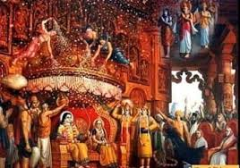

ikshvaku dynasty

According to the Ramayana, Ayodhya was founded by Manu, the progenitor of mankind. Both Ramayana and Mahabharata describe Ayodhya as the capital of the Ikshvaku dynasty of Kosala, including Rama and Dasharatha. The Purana-pancha-lakshana also describes the city as the capital of Ikshvaku kings, including Harishchandra.
The Ramayana states that the city was ruled by king Dasaratha, who a descendant(waunshaj) of king Ikshvaku. His son Rama was exiled(wanwas) to forest, and returned to the city after several years, establishing an ideal rule in the kingdom. According to Uttar Kand, a later addition to the Ramayana, Rama divided the kingdom into North and South Kosala at the end of his reign, with respective capitals at Shravasti and Kusavati, and installed his two sons (Luv and Kush) to rule them Rama himself entered the waters of the Sarayu river, along with all the inhabitants of the city, and ascended to heaven. The location of this mass suicide was the Gopratara Tirtha, according to the Mahabharata. Ayodhya was subsequently repopulated by king Rishabha.
Several other literary works based on the story of Rama also mention Ayodhya. These include the Abhisheka and Pratimanataka by the poet Bhasa (dated 2nd century CE or earlier), and the Raghuvamsha of Kalidasa ( 5th century CE). According to the Jain tradition, five tirthankaras were born at Ayodhya, including Rishabhanatha, Ajitanatha, Abhinandananatha, Sumatinatha, and Anantanatha.